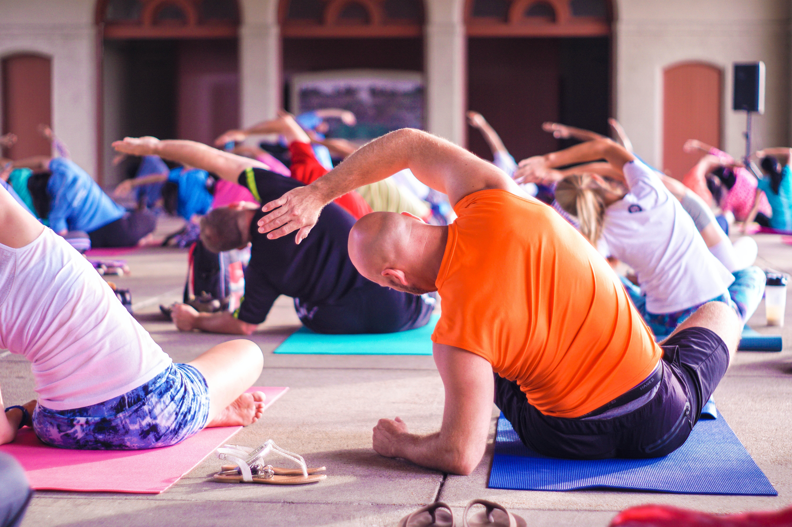

Importance of Exercise
Exercise is very important for our body. Some of the benefits include:
Physical Health
Engaging in regular exercise offers numerous benefits for our physical health. It helps to strengthen our muscles and bones, improving our overall strength and endurance. Regular exercise also enhances cardiovascular health by increasing heart rate and promoting better blood circulation. Moreover, it helps to manage weight by burning calories and reducing body fat, which can lower the risk of various health conditions such as obesity, diabetes, and heart disease.
Mental Health
Exercise is also beneficial for our mental health. It can help to reduce stress, anxiety, and depression by stimulating the production of endorphins, which are chemicals in the brain that are responsible for feelings of happiness and euphoria. Regular exercise can also help to improve our sleep quality, which can have a positive impact on our mental health.
Longevity and Quality of Life
Exercise is associated with increased longevity and a higher quality of life. Studies have shown that individuals who engage in regular physical activity tend to live longer than those who lead sedentary lifestyles. Exercise not only helps to maintain physical function as we age but also improves overall mobility, flexibility, and balance, reducing the risk of falls and injuries. Additionally, staying active and fit allows us to participate in daily activities, hobbies, and recreational pursuits with greater ease and enjoyment.
Types of Exercise
There are three main types of exercise: aerobic, anaerobic, and flexibility. Aerobic exercise, also known as cardio, is any type of exercise that increases the heart rate and promotes better blood circulation. Examples of aerobic exercise include walking, running, and swimming. Anaerobic exercise is any type of exercise that involves short bursts of intense activity, such as weightlifting or sprinting. Flexibility exercises are those that improve our range of motion and stretch our muscles, such as yoga and pilates.
| Name | Age | Country |
|---|---|---|
| John | 25 | USA |
| Emily | 28 | Canada |
| Michael | 32 | Australia |
| Sophia | 21 | UK |
Conclusion
Exercise is an important part of a healthy lifestyle. It offers numerous benefits for our